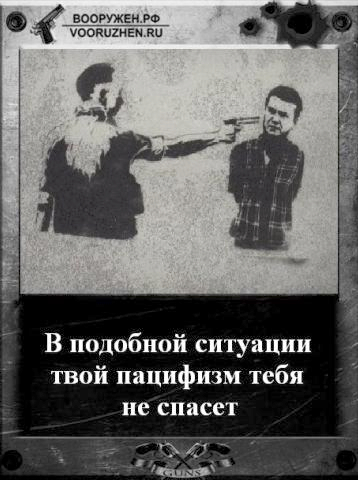

КАРАБАХ-2016: ПОСТ СДАН – ПОСТ ПРИНЯТ!
Апрельская война, если бы ее не было, ее бы обязательно придумали. Ведь только так можно гарантировать преемственность поколений. Регулярная смерть восемнадцати - двадцатилетних явно была недостаточна для преемственности. Тут ведь не в смерти дело, а в земле.
Пост сдан – Пост принят! В Армении, по крайней мере. Война вошла, наконец, в каждый детсад, в каждый школьный класс, в каждую студенческую аудиторию, война оказалась на каждом профиле, на каждом сайте, и оттуда она проникла на улицу, в магазины, такси и автобусы, затем побывала в каждом армянском доме. Такого не было двадцать с лишним лет.
Пост сдан – Пост принят! В Армении, по крайней мере. Оправдалась и окупилась промывка мозгов. Карабах, наконец, попал в топ общественных обсуждений. Отцензуренные байки отцов и дедов, ряды которых «очищались» и пополнялись 20 с лишним лет, приобрели легитимность для нового поколения рекрутов.
Нескольких дней хватило, чтобы все стали предателями – и власть, и оппозиция, предатели-русофобы и предатели-русофилы. Смотря кто для кого предатель. Хотя и апрель, и война уже позади, они продолжают мыслить, анализировать и спорить, о том, как надо эффективнее воевать. Прекращение войны пока нужно, чтобы выиграть время для мобилизации и милитаризации. Предатели спорят с предателями. И спорят они так, что пугают насмерть пацифистов. И пацифисты спешат быстро и активно вписаться в один из предательских лагерей.
Пост сдан - Пост принят! И на посту как всегда – пушечное мясо под диктатурой старых пердунов и пердунок. В Армении, по крайней мере.
Луиза Погосян
18-05-16
Пост сдан – Пост принят! В Армении, по крайней мере. Война вошла, наконец, в каждый детсад, в каждый школьный класс, в каждую студенческую аудиторию, война оказалась на каждом профиле, на каждом сайте, и оттуда она проникла на улицу, в магазины, такси и автобусы, затем побывала в каждом армянском доме. Такого не было двадцать с лишним лет.
Пост сдан – Пост принят! В Армении, по крайней мере. Оправдалась и окупилась промывка мозгов. Карабах, наконец, попал в топ общественных обсуждений. Отцензуренные байки отцов и дедов, ряды которых «очищались» и пополнялись 20 с лишним лет, приобрели легитимность для нового поколения рекрутов.
Нескольких дней хватило, чтобы все стали предателями – и власть, и оппозиция, предатели-русофобы и предатели-русофилы. Смотря кто для кого предатель. Хотя и апрель, и война уже позади, они продолжают мыслить, анализировать и спорить, о том, как надо эффективнее воевать. Прекращение войны пока нужно, чтобы выиграть время для мобилизации и милитаризации. Предатели спорят с предателями. И спорят они так, что пугают насмерть пацифистов. И пацифисты спешат быстро и активно вписаться в один из предательских лагерей.
Пост сдан - Пост принят! И на посту как всегда – пушечное мясо под диктатурой старых пердунов и пердунок. В Армении, по крайней мере.
Луиза Погосян
18-05-16